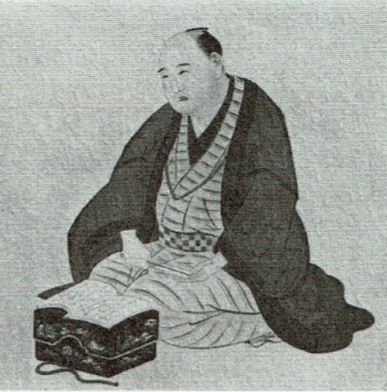
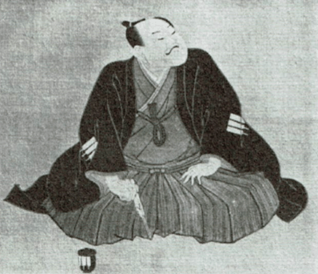
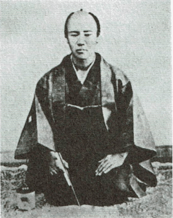
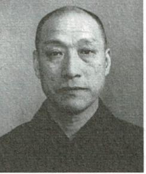
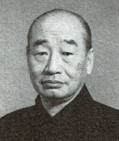
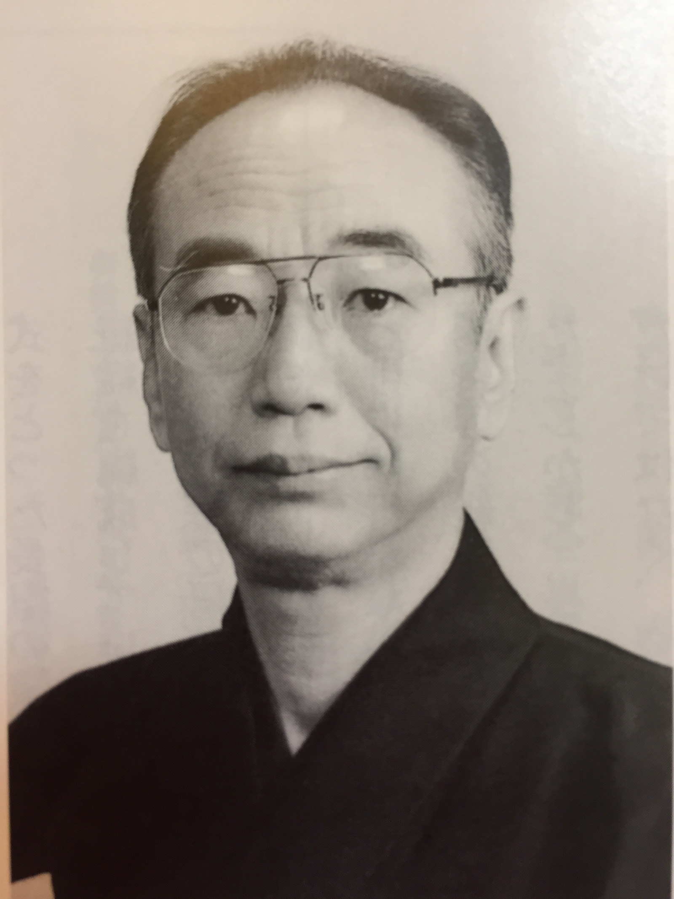
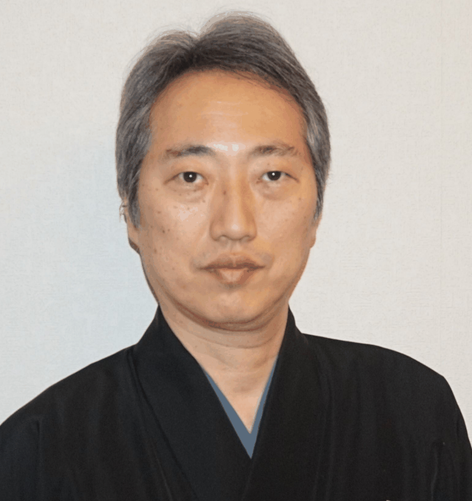

初代 吉住小三郎
1698（元禄11）～1753（宝暦３）55歳
初代の出自ははっきりしない。摂津（大阪）住吉神社の神官の出で、初めに住吉姓を名乗っていたが住吉の名で唄うのはおそれ多いということから神社に遠慮して、住吉を逆にして吉住に改めたと言われています。
宝暦の初めに、初代中村富十郎の踊った「京鹿の子娘道成寺」のタテ唄を唄い、大評判を取ったそうです。義理に厚く、東海道の旅の途次、財布を掏られて難渋していた初代小三郎を親切にもてなしてくれた島田宿（静岡県島田市）の人への恩義を忘れず、その後、島田の「帯祭り」では必ず屋台で長唄を唄いました。この仕来たりは現在も「島田の帯祭り」に吉住代々によって受け継がれています。

二代目 吉住小三郎
1799（寛政11）～1854（安政元）55歳
初め二代目芳村伊十郎の門弟で、芳村五郎治、吉住小八の名跡を経て、三代目芳村伊十郎となる。やがて伊十郎の名を返上して、一時期、花垣五郎三郎を名乗った後、1846（弘化３）年、二代目吉住小三郎となります。
二代目富士田音蔵、三代目岡安喜三郎と共に、天保時代（1830～43）を代表する三人の名人の一人と言われた。芳村五郎治の頃、中村座で瀬川菊之丞と中村芝翫が躍った「角兵衛」で新機軸を試み、大当たりをとって、一躍有名となった。三代目芳村伊十郎を名乗っていた頃「勧進帳」で岡安喜代八と両タテとなり、これが〝タテわかれ“の形式の嚆矢となりました。
島田の帯祭りへ出向く途中、箱根の関所で役人に止められ、「唄うたいとはなんぞや」と言われ、唄ってみせたところ、役人は喜び、「もう一つ唄ってくれ」と言われ、唄った後に「はじめは身分の証明のために唄ったが、後の一番分はそちらの所望」と代金を求めたという逸話が残っております。

三代目 吉住小三郎
1832（天保3）～1889（明治22）57歳
親は井伊大老の裃を作る仕立て職人だったが、二代目の内弟子となり、吉住小太郎を名乗る。後、二代目の養女こうと結婚し、二代目没後、十一代目杵屋六左衛門（後の根岸の勘五郎）の取り立てで三代目吉住小三郎を継ぎました。
若い頃は芸質が悪かったらしいが、文字通り血の出るような稽古の結果、腹の底から響く〝呂″の声の持ち主となり、遂に一流を極めるまでになりました。大きく年の違う弟（四代目）を幼少から引き取り、養父となって芸を伝えたそうです。
「俺は今日死ぬから」と言って、本当にその晩亡くなったという不思議な話が残っている。

四代目 吉住小三郎
1876（明治9）～1972（昭和47）97歳
幼少より、兄である三代目に引き取られ養子となる。
1890（明治23）年、三代目の死去により14歳で四代目吉住小三郎を襲名。翌年、歌舞伎座に出勤するが、三年後に勢力争いの巻き添えなどから思うことあって退座。
1902（明治35）年、杵屋六四郎と共に、芝居や舞踊から独立した“家庭音楽としての長唄の普及”を目指し、長唄研精会を創設。演奏会形式を採用し、古典曲の演奏のみならず、二人の合作、或いは単独で作曲した新曲を次々に発表、現代長唄の発展に計り知れぬ貢献をなしました。また、東京音楽学校長唄科の教授として後進育成にも力を注ぎました。
1948年、芸術院会員。
1956年、重要無形文化財（人間国宝）認定。
1957年、文化勲章受章。没後従三位。
1963年、家元を長男（五代目）に譲り、吉住慈恭を名乗る。

五代目 吉住小三郎
1908（明治41）〜1983（昭和58）75歳
1924（大正13）年、二代目小太郎の名で長唄研精会にデビュー。以後、父を補佐して長唄研精会、吉住会の運営に力を尽すこととなる。
1947（昭和22）年、第400回研精会を期に、四代目稀音家六四郎と共に長唄研精会を継承主宰する。
1963（昭和38）年、父に替わって五代目吉住小三郎を襲名した。
渋い芸風は、吉住の唄の本流として専門家筋に高い評価を得た。作曲多数。その他、作詞も手がけ、才能を発揮した。
1973年、紫綬褒章受章。
1979年、勲四等旭日小綬章受章。

六代目 吉住小三郎
1931（昭和6）〜2006（平成18）75歳
1955（昭和30）年、東京芸術大学邦楽科卒業後、小三治郎の名で長唄研精会にデビュー。
1983（昭和58）年、五代目の死去により六代目吉住小三郎襲名。
幼少より、人間国宝の祖父慈恭から直接薫陶を受け、伝統の長唄を継承する一方、邦楽オペレッタ等の分野にも進出して来た六代目は、洋楽への造詣も深く、リズミカルで、メロディーを重視した、現代人の音感にマッチする長唄の創作にも意欲的に取り組み、従来とは異なる形式の曲を数多く生み出している。また、学生時代に学んだ指揮の経験を生かし、数百人規模の合奏の指揮に才を示す。
六代目が中心となって立ち上げた、NPO法人「三味線音楽普及の会」の理事長として、児童、生徒への実技指導や出張演奏などの活動も展開。

七代目 吉住小三郎
2008（平成20）年、六代目の長男の吉住小三治郎が七代目を襲名し家元を継承。
長唄研精会 主宰
長唄吉住会 家元
一般社団法人 長唄協会会長
NPO法人「三味線音楽普及の会」副理事長